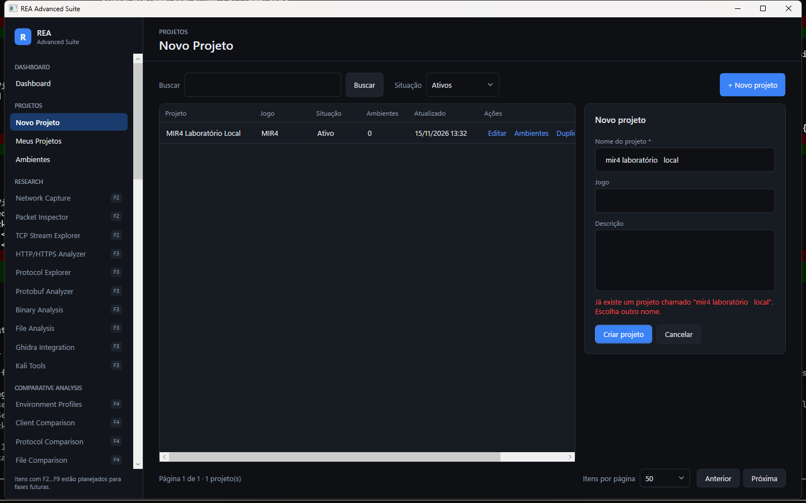
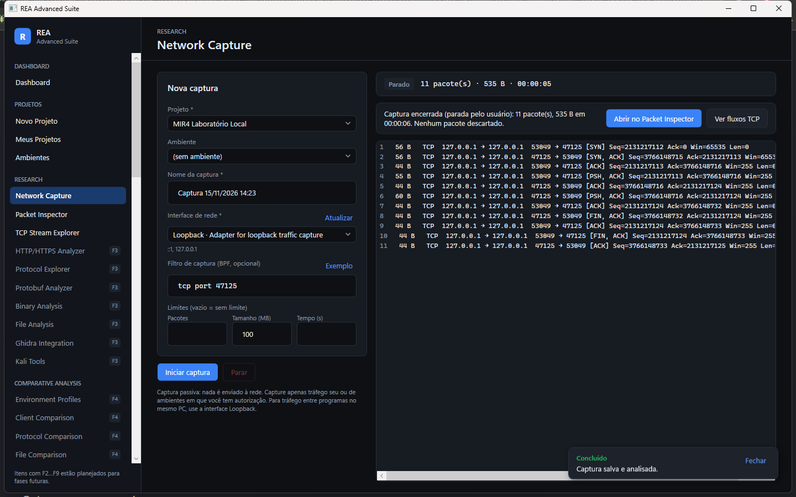
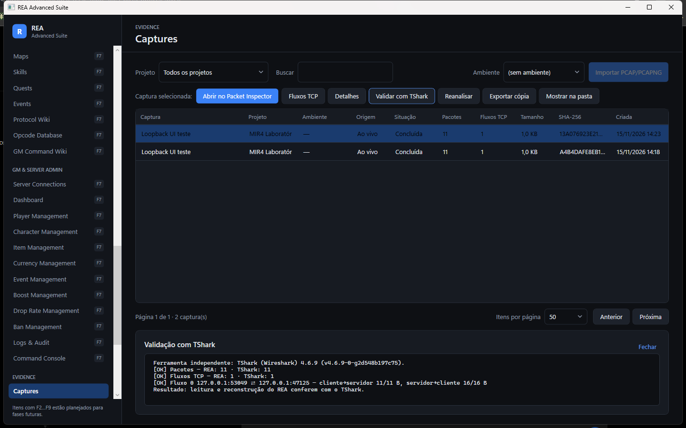
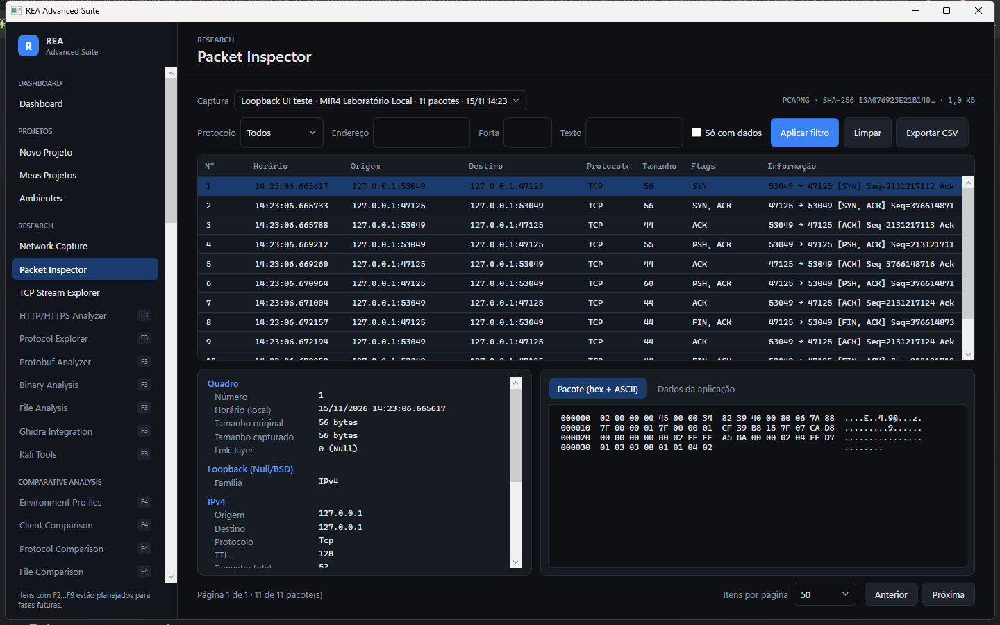
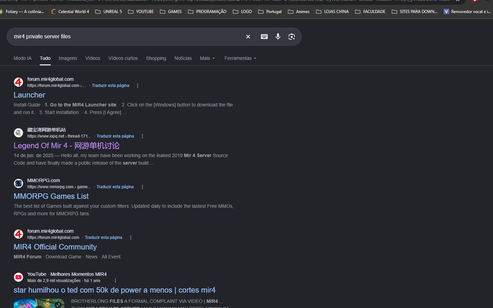

Nada encontrado. Tente outra palavra, por exemplo “PCAPNG”, “backup” ou “fluxo”.
REA Advanced Suite
Plataforma Windows para investigar clientes e servidores de jogos em ambientes próprios ou autorizados: organiza projetos e evidências, captura e analisa tráfego de rede e, nas próximas fases, analisa binários, cria launchers, portais, wikis e sessões de gameplay.
Fase 1 pronto
Projetos, ambientes, auditoria, backup, detecção de ferramentas.
Fase 2 pronto
Captura real de rede, PCAPNG, Packet Inspector, TCP Stream Explorer, validação com TShark.
Fases 3–9 planejado
Protocolos, binários, comparação, Launcher, Portal, Wiki/GM, Bot Lab AI, MIR4.
Instalação e primeira abertura
Requisitos
| Item | Para quê | Como instalar |
|---|---|---|
| Windows 10/11 x64 | — | — |
| .NET 10 ou 11 (ou pacote self-contained) | Abrir o aplicativo | dotnet.microsoft.com |
| Npcap com loopback | Network Capture | npcap.com — marque Support loopback traffic capture |
| Wireshark / TShark | Validar capturas | winget install WiresharkFoundation.Wireshark |
| Node.js 22.19+ / 24.11+ | Motor REA (CLI) | nodejs.org |
| Ghidra 12 + JDK 21 | Análise estática (REA e Fase 3) | Defina GHIDRA_INSTALL_DIR |
Abrir o aplicativo
cd "C:\Users\Gabriel\Desktop\REA ADVANCED SUITE\suite"
.\scripts\check-environment.ps1 # mostra o que falta (não instala nada)
.\scripts\build.ps1
.\scripts\run.ps1Na primeira abertura o REA cria a pasta de dados, aplica as migrações do banco e faz um backup automático em segundo plano. A primeira vez pode levar alguns segundos.
Onde ficam os dados
| Item | Caminho |
|---|---|
| Pasta raiz | %LOCALAPPDATA%\REA (mude com a variável REA_HOME) |
| Banco | data\rea.db |
| Capturas | captures\<projeto>\<captura>.pcapng |
| Backups | backups\ |
| Logs | logs\rea-AAAAMMDD.log (30 dias) |
Convenções da interface
- Menu lateral com todas as áreas. Etiqueta
F3…F9= módulo planejado para aquela fase. - Notificações no canto inferior direito, sempre com texto (Concluído, Atenção, Erro), nunca só cor.
- Confirmação apenas em ações destrutivas (arquivar, excluir, restaurar).
- Botões travam durante a operação; formulários só limpam depois de salvar.
- Listas paginadas no banco: 50, 100, 200 ou 500 itens por página.
- Na busca de projetos e capturas, Enter executa a busca.
Projetos
Um projeto é uma investigação isolada. Ambientes, capturas e descobertas de um projeto nunca se misturam com os de outro.

Criar um projeto
- Menu Projetos › Novo Projeto.
- Preencha o Nome (3 a 120 caracteres, único — maiúsculas e espaços extras não contam), o Jogo e a Descrição.
- Clique em Criar projeto. Se houver erro, a mensagem aparece em vermelho e o que você digitou é mantido.
Ações em Meus Projetos
| Ação | O que faz |
|---|---|
| Editar | Altera e registra o antes/depois na auditoria. |
| Ambientes | Abre os ambientes já filtrados para o projeto. |
| Duplicar | Copia o projeto e os ambientes. Capturas e evidências não são copiadas. |
| Arquivar / Reativar | Tira da lista de ativos sem apagar nada. Projeto arquivado não recebe ambientes nem capturas. |
| Excluir | Só para projeto sem ambientes e sem capturas. Com histórico, use Arquivar. |
Ambientes
Perfil do que está sendo investigado dentro de um projeto: Oficial, Servidor privado, Laboratório local, Emulador ou Personalizado, com versão e pasta do cliente.
- Menu Projetos › Ambientes e escolha o projeto no topo.
- + Novo ambiente, preencha nome (único no projeto), tipo, versão, diretório e observações.
- Salvar. Ambientes com capturas não podem ser excluídos (são evidência).
Dashboard, auditoria e configurações
Dashboard
Mostra só dados reais: capturas, pacotes analisados, fluxos TCP, módulos implementados, projetos, ambientes, ferramentas externas e atividades recentes. As contagens aparecem primeiro; a detecção de ferramentas leva alguns segundos e mostra “Detectando…” enquanto roda.
Evidence › Atividades
Auditoria legível: quando, operador (usuário do Windows), ação, resumo e Antes/Depois. Não pode ser editada.
Settings › Tools
Detecta Npcap, TShark, Ghidra, Java, REA CLI, WSL/Kali e WiX executando a própria ferramenta. Nada é instalado automaticamente.
Settings › Backup
- Criar backup agora — cópia consistente do banco, mesmo com o app aberto.
- Automático a cada 24 h (mantém 14).
- Restaurar — salva antes o estado atual (“Antes de restaurar”), valida o arquivo e só então substitui.
captures\: copie essa pasta junto para um backup completo.Visão geral da Fase 2
Captura real de tráfego com Npcap, gravação em PCAPNG, inspeção pacote a pacote e reconstrução de conversas TCP — tudo ligado ao projeto como evidência, com SHA-256.
Network Capture
Escolha interface e filtro, capture, pare. Salva PCAPNG e analisa sozinho.
Evidence › Captures
Lista, importação de PCAP/PCAPNG, detalhes, validação com TShark, exportação.
Packet Inspector
Pacotes paginados, filtros, camadas decodificadas, hex e ASCII.
TCP Stream Explorer
Conversas reconstruídas, lacunas, retransmissões e linha do tempo.
Capturar tráfego (Network Capture)

- Menu Research › Network Capture. Se aparecer um aviso amarelo, o Npcap não está instalado.
- Escolha o Projeto (obrigatório) e, se quiser, o Ambiente.
- Dê um nome à captura.
- Escolha a interface. Para tráfego entre programas no mesmo PC (cliente e servidor locais), use Loopback · Adapter for loopback traffic capture. Para tráfego que sai do PC, use a placa (Wi-Fi/Ethernet).
- Opcional: um filtro BPF para gravar só o que interessa (exemplos abaixo). O filtro é validado antes de começar.
- Opcional: limites de pacotes, tamanho (MB) ou tempo (s). A captura para sozinha ao atingir um deles.
- Iniciar captura. O status muda para ● Capturando e os pacotes aparecem à direita (últimos 1000; o arquivo guarda todos).
- Parar. O REA grava o PCAPNG, calcula o SHA-256 e gera estatísticas. Depois use Abrir no Packet Inspector ou Ver fluxos TCP.
Exemplos de filtro BPF
| Filtro | Grava |
|---|---|
tcp port 7000 | Só TCP na porta 7000 (origem ou destino) |
host 192.168.0.10 | Tudo de/para esse IP |
tcp portrange 7000-7100 | Faixa de portas |
udp and port 53 | DNS |
not port 443 | Tudo menos HTTPS |
Gerenciar capturas (Evidence › Captures)

Importar um PCAP/PCAPNG
- Escolha um Projeto no filtro (a importação precisa de um projeto) e, se quiser, o Ambiente.
- Importar PCAP/PCAPNG e selecione o arquivo (Wireshark, tcpdump, etc.).
- O REA confere o formato, copia o arquivo para a pasta de capturas, compara o SHA-256 da cópia com o do original e analisa. O original nunca é alterado.
Ações da captura selecionada
| Ação | O que faz |
|---|---|
| Abrir no Packet Inspector | Também com duplo clique na linha. |
| Fluxos TCP | Abre o TCP Stream Explorer nesta captura. |
| Detalhes | Origem, interface, filtro, horários, SHA-256, protocolos, pacotes descartados, observações. |
| Validar com TShark | Compara contagem de pacotes, conversas TCP e o conteúdo dos 20 primeiros fluxos com uma ferramenta independente. Linhas [OK] ou [DIFERENTE]. |
| Reanalisar | Recalcula as estatísticas a partir do arquivo. |
| Exportar cópia | Salva uma cópia do PCAPNG/PCAP em outro lugar (para abrir no Wireshark, por exemplo). |
| Mostrar na pasta | Abre o Explorer com o arquivo selecionado. |
Capturas são evidência: não há botão de excluir. Para encerrar uma investigação, arquive o projeto.
Inspecionar pacotes (Packet Inspector)

- Escolha a Captura no topo (as 500 mais recentes). À direita aparecem formato, início do SHA-256 e tamanho.
- Filtre por Protocolo, Endereço (IP de origem ou destino), Porta, Texto (procura no resumo e nos bytes, sem diferenciar maiúsculas) e Só com dados. Clique em Aplicar filtro (ou Enter no campo Texto).
- Clique num pacote para ver as camadas (Quadro, Loopback/Ethernet, IPv4/IPv6, TCP/UDP, Dados) e os bytes: aba Pacote (quadro inteiro) ou Dados da aplicação (só o payload).
- Exportar CSV grava todos os pacotes do filtro atual (não só a página).
Reconstruir conversas (TCP Stream Explorer)

- Escolha a captura. O resumo mostra quantos fluxos são completos, com lacunas ou parciais.
- Selecione um fluxo e a Direção (Cliente → Servidor ou Servidor → Cliente).
- Veja os bytes em Hex + ASCII ou Somente texto, e a linha do tempo (quadro, horário, sentido C → S / S → C, flags, tamanho, sequência relativa).
- Exportar bytes salva a direção escolhida num arquivo
.binpara análise em outras ferramentas.
O que significa cada estado
| Estado | Significado |
|---|---|
| Completo | Handshake (SYN) e encerramento (FIN ou RST) observados e nenhuma lacuna. |
| Sem lacunas (início/fim não capturados) | Os bytes observados são contínuos, mas a captura começou depois da conexão ou terminou antes do fim. |
| Incompleto: N lacuna(s) | Faltam segmentos. Também conta quando o outro lado confirmou (ACK) bytes que não estão na captura. As lacunas aparecem em amarelo e são preenchidas com 00 na visualização e na exportação. |
O REA reordena segmentos fora de ordem e descarta retransmissões (contadas na coluna Retransm.). Um fluxo com lacuna nunca é marcado como completo.
Roteiro: estudar a comunicação do seu laboratório
- Crie o projeto e o ambiente (ex.: Laboratório local, versão do cliente).
- Descubra a porta do servidor do laboratório (no próprio servidor ou com
netstat -ano). - Em Network Capture, use a interface certa (loopback se cliente e servidor estão no mesmo PC) e o filtro
tcp port <porta>. - Inicie a captura, faça uma ação por vez no cliente (login, entrar no mundo, mover…) e anote os horários.
- Pare, abra o TCP Stream Explorer e compare os bytes de cada momento com as ações anotadas.
- Rode Validar com TShark para ter uma segunda ferramenta confirmando a leitura.
- Registre hipóteses como hipóteses. A correlação automática entre ações e pacotes chega com o Bot Lab › Manual Gameplay e a Session Timeline (Fase 4).
Motor REA pelo terminal
O REA (rea-agents 6.4.0, na raiz do repositório) analisa binários, PE, .NET, apps JavaScript/Electron e mais,
sempre localmente e com evidência (SHA-256, provedor, cobertura, limitações).
cd "C:\Users\Gabriel\Desktop\REA ADVANCED SUITE"
node scripts/rea.mjs doctor
node scripts/rea.mjs inspect-artifact "D:\Lab\Cliente\Game.exe" --format md
node scripts/rea.mjs inspect-pe-resources "D:\Lab\Cliente\Game.exe"
node scripts/rea.mjs analyze "D:\Lab\Cliente\Game.exe" # usa o Ghidra
node scripts/rea.mjs search "Login"| Objetivo | Comando |
|---|---|
| Identificar arquivo | inspect-artifact |
| Seções, imports | inspect-binary-layout |
| Recursos de PE | inspect-pe-resources |
| Assinatura | inspect-signature |
| Assembly .NET | inspect-managed-artifact, inspect-managed-members |
| Função como código | decompile, function |
| Strings/funções | search, xrefs, trace |
| Extrair pacote | extract-artifact |
rea inspect-packet-capture só funciona em Linux. No Windows use o Packet Inspector da suíte (Fase 2).O que vem a seguir
| Fase | Conteúdo |
|---|---|
| 3 | Protocol Explorer, Protobuf, Binary/File Analysis, Ghidra Integration, HTTP Analyzer, Kali Tools |
| 4 | Perfis de ambiente, comparações, Session Timeline, correlação de evidências, Bot Lab: Manual Gameplay, Session Recorder, History, Evidence Explorer |
| 5 | Launcher Studio |
| 6 | Portal Studio |
| 7 | Wiki, GM & Server Admin, Bot Lab: AI Gameplay, Live Observer, Visual Recognition, Scenario Builder |
| 8 | Template de pesquisa MIR4 |
| 9 | Finalização, instalador MSI, temas |
Bot Lab AI
Manual Gameplay (prioritário): você joga normalmente e o REA registra, em segundo plano, capturas de tela, eventos marcados por você (atalhos configuráveis) e o tráfego de rede, tudo numa linha do tempo sincronizada. Não exige IA nem injeta nada no processo do jogo.
AI Gameplay: agente visual que observa e executa cenários de teste somente em ambientes de laboratório próprios e com aprovação de cada ação. Em ambientes do tipo Oficial, o agente apenas observa. Sem automação de farm/combate em servidores de terceiros e sem contornar anti-cheat.
Solução de problemas
| Sintoma | O que fazer |
|---|---|
| Aviso “Npcap não está instalado” | Instale de npcap.com marcando loopback; reabra o app. |
| Interface Loopback não aparece | Reinstale o Npcap com Support loopback traffic capture. |
| “Filtro BPF inválido” | Revise a sintaxe (ex.: tcp port 7000); a mensagem mostra o erro do Npcap. |
| Captura com 0 pacotes | Interface errada (loopback × placa de rede) ou filtro restritivo demais. |
| “pacote(s) descartado(s) pelo driver” | Tráfego alto: use filtro BPF para reduzir o volume. |
| “Arquivo incompleto” no Inspector | O arquivo foi cortado (queda, cópia incompleta). Os pacotes anteriores ao corte são exibidos normalmente. |
| Fluxo “Incompleto” | A captura perdeu segmentos ou começou no meio. Capture de novo com filtro e limites adequados. |
| Validar com TShark falha | Instale o Wireshark ou defina REA_TSHARK com o caminho do tshark.exe. |
| “Este projeto tem capturas registradas” | Regra de preservação de evidência: arquive o projeto. |
Logs detalhados: %LOCALAPPDATA%\REA\logs.
Uso responsável
O REA é ferramenta de pesquisa para ambientes próprios, laboratórios e sistemas em que você tem autorização. Não implementa — e não deve ser usado para — roubo de credenciais, coleta de tokens de terceiros, força bruta, exploração de servidores de terceiros, evasão de anti-cheat, falsificação de identidade de cliente, bypass de autenticação, spoofing de identificadores de hardware ou adulteração de assinaturas de launchers.